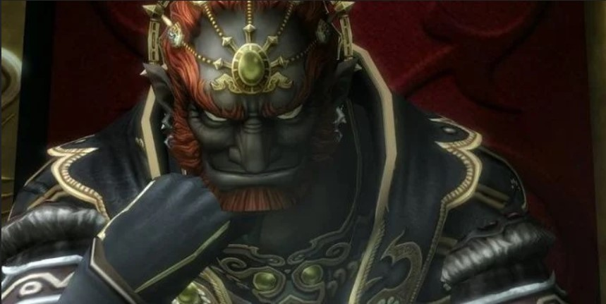
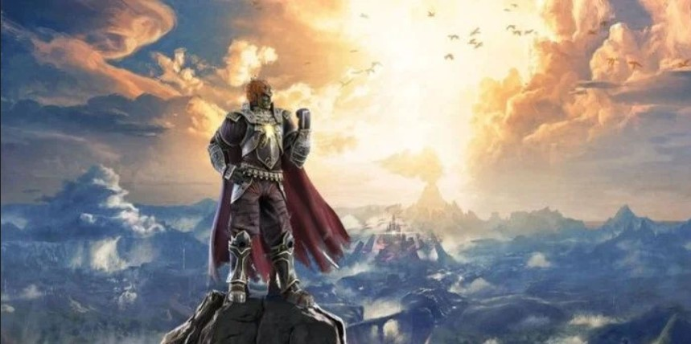

The Legend of Zelda: Breath of the Wild 2 está en desarrollo y parece que Nintendo está trayendo de vuelta a Ganondorf, un favorito de toda la vida de la serie.
Una secuela de la inmensamente popular Legend of Zelda: Breath of the Wild de Nintendo está actualmente en desarrollo, y los fanáticos no podrían estar más emocionados de ver a dónde irá la serie. Mientras que algunos esperan desesperadamente jugar como Zelda esta vez, algunos fanáticos están extremadamente emocionados de ver regresar una cara familiar: Ganondorf.
Nintendo aparentemente presentó un nuevo Ganondorf, que estuvo notablemente ausente del primer juego. Ganondorf es el villano perfecto para la próxima secuela por varias razones.
Algo de historia de Ganondorf
Para entender primero la historia de Ganon / Ganondorf, se debe hacer un rápido aparte para presentar al antepasado de Ganondoft: Fallecimiento. Demise fue el principal antagonista en The Legend of Zelda: Skyward Sword.
Este tirano pelirrojo intentó tomar el poder de la Diosa y transformar el mundo en lo que quisiera. Obviamente fue golpeado por Link, pero no antes de usar su último aliento para colocar una maldición sobre Link y Zelda, que condena a ellos y sus antepasados para luchar una batalla eterna, vinculando así los tres caracteres de destino, incluso todo el camino hasta The Legend of Zelda: Breath of the Wild.
¿Porqué es el villano perfecto?
Ganondorf es el villano perfecto para centrarse en el próximo juego de Legend of Zelda. Breath of the Wild se centró en luchar contra el demonio Ganon, por lo que es hora de volver a la fuente de todo y aprender más sobre el ex rey del Gerudo.
Hay una oportunidad fantástica para aprender más sobre Ganondorf y el Gerudo, especialmente si algunos personajes favoritos de los fanáticos regresan en la secuela. La historia de Ganondorf solo se ha tocado un poco, y esta iteración de Ganondorf es incluso menor que la mayoría de las iteraciones.